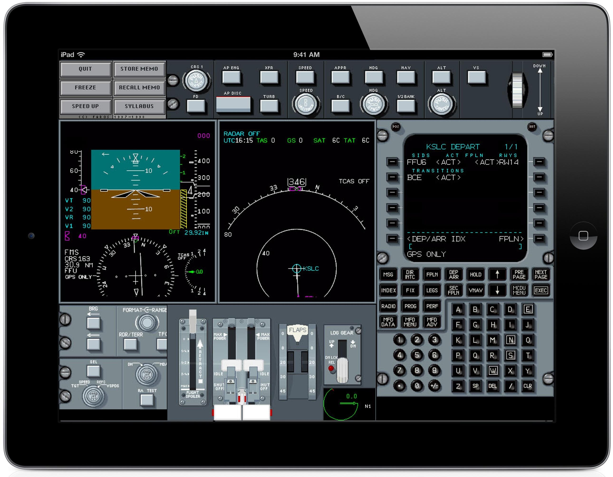
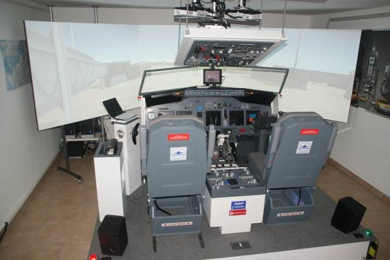

Flight Debugging System for FMS


A system that is entirely autonomous with no relationships with the flight management system other than consuming the data coming from this API offered by the aircraft manufacturer, API that could also allow it to take control of the flight in case of failures that it labels as being not well handled by the pilots and the aircraft flight system. This system will not be able to fix mechanical failures but can be a very good tech layer able to fix aircraft’s flight system bugs.
one of the modules of this FDS could be simply networks of sets of cameras installed into the cockpit that can detect the actions of the pilots and see if they are really following in time and order the defined procedures and checklists because an aircraft is a physical object then aircraft manufacturers have already provided us an API whose data is what our eyes can see and Cameras as extensions of our eyes can send the signals they get to a computer which will see if everything is working correctly and the actions of the pilots are compliant to the defined airline’s procedures.
What I am trying to express is the idea of a third-party player between aircraft manufacturers and airliners who operate the manufactured aircraft. A third-party player that is in charge of building and operating this third-party system will be arbitrating between the pilots and the aircraft system. For this to happen aircraft manufacturers like Boeing and airbus should provide an API to the aircraft they build and motivate other tech organizations to build a third-party system that will behave like an independent facts checker and flight security carer. Air carrier could then chose their third-party system provider like how they chose their insurers.
To say short I am advocating for open aircraft APIs for nurturing security-oriented tech-enabled projects from aircraft operators and tech players like you and me. Opening a system to others helps build a bigger ecosystem and big ecosystems ignite ideas. We have already seen this impact with open source software but I know that an aircraft is not a simple computer that we could bug when we want because there are millions of life and money that depend on aircraft safety and even software and computer bugs can lead to loss of life and money. I will be soon starting to write about Costly software bugs, I promise nothing this time but I have already drawn the line for this new topic that I will be covering and it will be about software bugs that led to death or/and huge financial loss.
It will not be easy for big companies like Airbus and Boeing to be open to open their aircraft’s systems to developers and engineers like you and me but if they do I think that they will benefit from the wisdom of the crowd because there will be millions of people who will contribute to making airlines operations safer and even funnier for the passengers.
PS: Microsoft and its game flight simulator provided an API that led to this project called Project Magenta. Through this project magenta, hundreds of passionate and skilled people have built simulators like this one in the picture.

To show that when a system is open, people will always use it and build other amazing things on purpose. This simulator that you see in this picture was built by a passionate person. Do you think that if Aircraft flight management systems are open, people and tech organizations will not build amazing things with them?